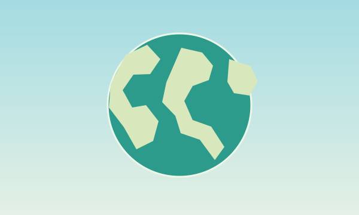

منبع و تاریخ کنار هر مطلب
اخبار و تحلیل گردشگری
خبرهای ایران در اولویتاند؛ بخش جهانی به روندهای منتخب محدود است. هر کارت لینک ناشر و تاریخ گزارش را نشان میدهد.

در حال بارگذاری…
مطلبی پیدا نشد؛ عبارت دیگری امتحان کن.
خبرهای ایران در اولویتاند؛ بخش جهانی به روندهای منتخب محدود است. هر کارت لینک ناشر و تاریخ گزارش را نشان میدهد.

در حال بارگذاری…
مطلبی پیدا نشد؛ عبارت دیگری امتحان کن.